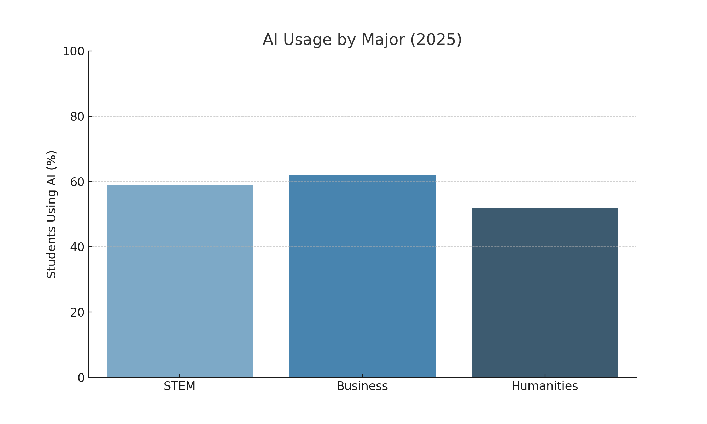
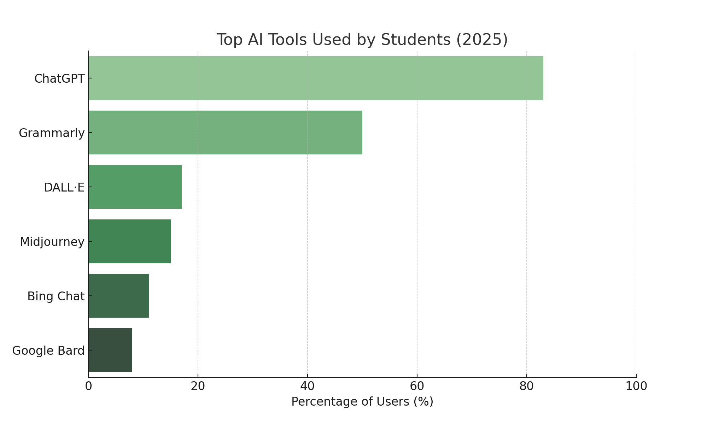
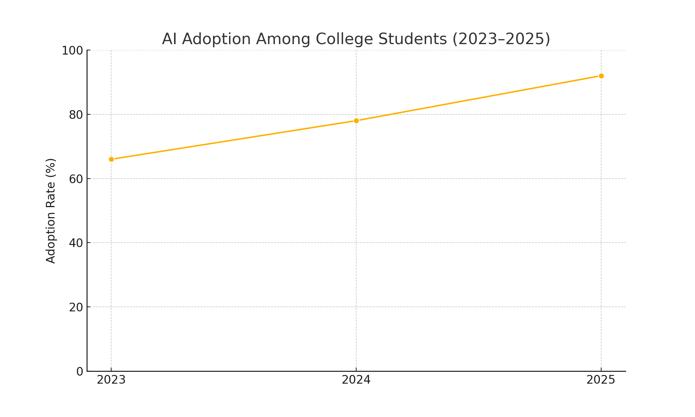
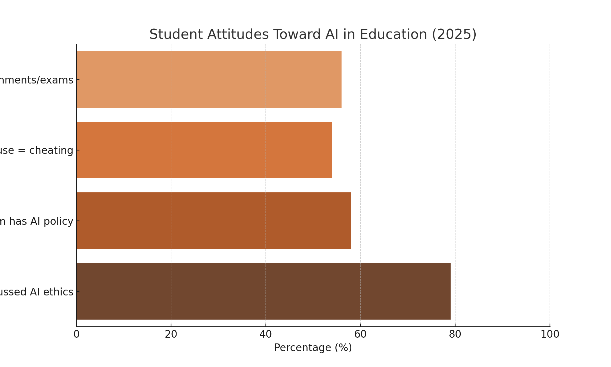

By 2025, artificial intelligence has become a normalized part of U.S. college students' academic routines. AI adoption among students now exceeds 90%, spanning disciplines and tools—from writing assistants to visual generators and tutoring bots. This white paper provides a structured, data-backed look into the tools, trends, and attitudes shaping the AI-in-education landscape, segmented by major and use case.
AI adoption varies across fields of study, reflecting differences in academic demands and digital fluency. In 2025, 62% of business majors, 59% of STEM students, and 52% of humanities majors report regularly using AI tools to complete coursework. STEM students tend to use AI for coding help and data analysis, while humanities students lean on writing and summarization tools.
Writing assistants dominate AI usage. ChatGPT leads with 83% adoption among AI-using students, followed by Grammarly at 50%. Visual generators like DALL·E (17%) and Midjourney (15%) are popular for art and design majors. Meanwhile, chatbots like Bing Chat (11%) and Google Bard (8%) serve as homework and brainstorming aides.
AI adoption has surged rapidly in three years. In 2023, around 66% of students had experimented with AI. By 2024, that number rose to 78%. As of 2025, 92% of students report some level of regular AI use, with many integrating it into daily academic habits like reading summarization, problem solving, or paper drafting.
Student sentiment toward AI remains complex. 56% admit to using AI on assignments or exams, while 54% still believe some forms of use constitute academic dishonesty. Although 79% say instructors have discussed AI ethics in class, only 58% report that their program has a clearly defined AI policy. This gap between ethical guidance and institutional enforcement is a key friction point.
Most students use AI to explain difficult concepts, generate outlines, summarize readings, assist in code debugging, translate language, and create visuals for presentations.
Yes and no. While 56% of students use AI on assignments, 54% still believe certain uses—especially direct insertion of generated content—cross ethical lines.
Not fully. Although 79% of students report some classroom discussion of AI ethics, only 58% say their college or university has a formal AI usage policy in place.